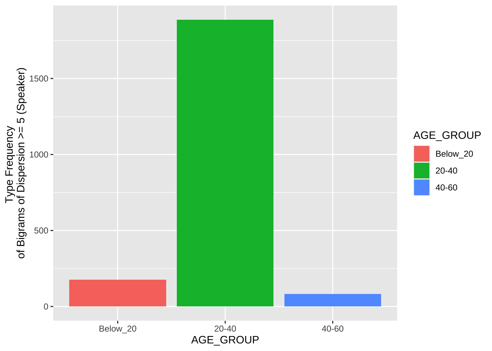

Chapter 14 Vector Space Representation III
In this chapter, we will discuss the idea of representing the semantic space of words via unsupervised learning. The word vectors learned from the large collection of text data are referred to as word embeddings.
This tutorial is based on Dmitriy Selivanov’s website.
14.1 Library
14.2 Text Collection
library(text2vec)
wikitext <- "demo_data/corp-wikipedia"
wiki <- readLines(wikitext, n = 1, warn = FALSE)
substr(wiki, 1, 400)## [1] " anarchism originated as a term of abuse first used against early working class radicals including the diggers of the english revolution and the sans culottes of the french revolution whilst the term is still used in a pejorative way to describe any act that used violent means to destroy the organization of society it has also been taken up as a positive label by self defined anarchists the word a"14.3 Tokenization and Vocabulary
14.5 Term-Cooccurrence Matrix
14.6 Fitting Model
14.7 Averaging Word Vectors
14.8 Semantic Space
berlin = word_vectors["paris", , drop = FALSE] -
word_vectors["france", , drop = FALSE] +
word_vectors["germany", , drop = FALSE]
cos_sim = sim2(x = word_vectors, y = berlin, method = "cosine", norm = "l2")
head(sort(cos_sim[,1], decreasing = TRUE), 5)## berlin paris germany munich leipzig
## 0.7791436 0.7701525 0.6789727 0.6365748 0.626575114.9 Visualizing Multi-dimensional Space
Please read How to Use t-SNE Effectively for more information.
- Visualizae the semantic distances of the top 100 content words in corpus
Here I demonstrate how to visualize the semantic distances of the 2000 words included in the General Servise Word List using the word embeddings. The procedures are described as follows:
- We load the Google Analogy Dataset from the web.
- We clean up the data and retrieve a random sample set for visualization
- We use t-SNE for multidimensional scaling.
- We obtain two-dimensional cordinates from t-SNE for visualization
require(stringr)
google_analogy <- readLines("http://download.tensorflow.org/data/questions-words.txt")
google_analogy[1:10]## [1] ": capital-common-countries" "Athens Greece Baghdad Iraq"
## [3] "Athens Greece Bangkok Thailand" "Athens Greece Beijing China"
## [5] "Athens Greece Berlin Germany" "Athens Greece Bern Switzerland"
## [7] "Athens Greece Cairo Egypt" "Athens Greece Canberra Australia"
## [9] "Athens Greece Hanoi Vietnam" "Athens Greece Havana Cuba"## [1] ": capital-common-countries" ": capital-world"
## [3] ": currency" ": city-in-state"
## [5] ": family" ": gram1-adjective-to-adverb"
## [7] ": gram2-opposite" ": gram3-comparative"
## [9] ": gram4-superlative" ": gram5-present-participle"
## [11] ": gram6-nationality-adjective" ": gram7-past-tense"
## [13] ": gram8-plural" ": gram9-plural-verbs"google_analogy_df <- data.frame(analogy = str_to_lower(google_analogy)) %>%
filter(str_detect(analogy,"^[^\\:]")) %>%
tidyr::separate(analogy, into = c("w1","w2","w3","w4"))
# random sample
set.seed(12)
words <- google_analogy_df %>%
sample_n(20,replace = F) %>%
unlist %>% as.vector
# Include only seen cases
words_seen <-words[words %in% row.names(word_vectors)] %>% unique
tsne <- Rtsne(word_vectors[words_seen,], perplexity = (length(words_seen)-1)/3 , pca = FALSE) #
tsne_df <- tsne$Y %>%
as.data.frame() %>%
mutate(word = words_seen)
tsne_dftsne_df %>%
ggplot(aes(x = V1, y = V2, label = word)) +
geom_point(size = 0.7, alpha = 0.7) +
geom_text(size = 3, family = "Arial Unicode MS", vjust = 1.4, angle = 0) + #
#scale_x_continuous(expand= expansion(add=10)) +
#scale_y_continuous(expand= expansion(add=50)) +
scale_color_discrete(guide=F) +
theme_bw()-> tsne_plot
tsne_plot
An overview of tasks in Chinese NLP: See Chinese NLP
Exercise 14.1 Use the
word_vectors trained in this chapter and visualize the semantic distances of the words included in country below with the t-SNE multi-dimensional scaling techique. (Parameters: perplexity = 2.5)